1. Bối cảnh và mục tiêu
Nhu cầu chuyển đổi số, phạm vi đề tài và mục tiêu xây dựng hệ thống.
Sản phẩm thương mại điện tử cho thiết bị công nghệ, bao gồm trải nghiệm mua hàng cho khách hàng và hệ thống quản trị vận hành cho cửa hàng.
Nhu cầu chuyển đổi số, phạm vi đề tài và mục tiêu xây dựng hệ thống.
Tác nhân sử dụng, luồng nghiệp vụ và các yêu cầu chức năng chính.
Các màn hình khách hàng và quản trị viên được xây dựng trong hệ thống Electro.
Kiến trúc JSP/Servlet, mô hình dữ liệu MySQL, phân quyền và yêu cầu phi chức năng.
Kết quả kiểm thử các luồng nghiệp vụ quan trọng và mức độ đáp ứng yêu cầu.
Những kết quả đạt được, hạn chế hiện tại và định hướng phát triển tiếp theo.
Kho hàng, đơn hàng và khách hàng cần được số hóa để giảm sai sót và tăng tốc xử lý.
Khách hàng cần nền tảng minh bạch thông tin, dễ tìm sản phẩm và đặt hàng mọi lúc.
Admin cần dashboard, thống kê, tồn kho và trạng thái đơn hàng để điều hành nhanh hơn.
Theo báo cáo đề tài, hệ thống được xây dựng theo MVC với JSP/Servlet, MySQL, Bootstrap và jQuery, hướng tới sản phẩm Java Web ổn định, dễ bảo trì và có khả năng ứng dụng thực tế.
Khách hàng
Cần thông tin sản phẩm rõ, giá minh bạch, thao tác mua hàng nhanh và theo dõi đơn tiện lợi.
Quản trị viên
Cần dashboard, danh sách sản phẩm, xử lý đơn hàng, quản lý tài khoản và kiểm soát đánh giá.
Hệ thống
Cần xác thực, phân quyền, kiểm tra dữ liệu đầu vào và duy trì các trạng thái nghiệp vụ nhất quán.
Mỗi tác nhân được xác định từ nhu cầu thực tế của hệ thống bán hàng: khách hàng cần mua sắm thuận tiện, quản trị viên cần kiểm soát vận hành, hệ thống cần đảm bảo tính đúng đắn và an toàn dữ liệu.
Xem danh mục, tìm kiếm thiết bị, xem chi tiết thông số, quản lý giỏ hàng, đặt hàng và thanh toán.
Quản lý sản phẩm, kho hàng, trạng thái đơn hàng, người dùng và thống kê doanh thu cơ bản.
Chưa tích hợp API vận chuyển, chưa triển khai bảo mật hạ tầng nâng cao hoặc cổng thanh toán thật.
Xác thực người dùng trước khi sử dụng giỏ hàng, đặt hàng và xem thông tin cá nhân.
Duyệt trang chủ, lọc theo danh mục, xem chi tiết thông số và đánh giá.
Điều chỉnh số lượng, chọn sản phẩm cần mua, nhập thông tin giao hàng và phương thức thanh toán.
Xem trạng thái đơn, hủy đơn đang chờ xử lý hoặc đánh giá sau khi đơn hoàn tất.
Luồng khách hàng được thiết kế liền mạch để giảm số bước thao tác, đồng thời bảo đảm dữ liệu mua hàng được ghi nhận đầy đủ cho quá trình xử lý đơn và chăm sóc sau bán.
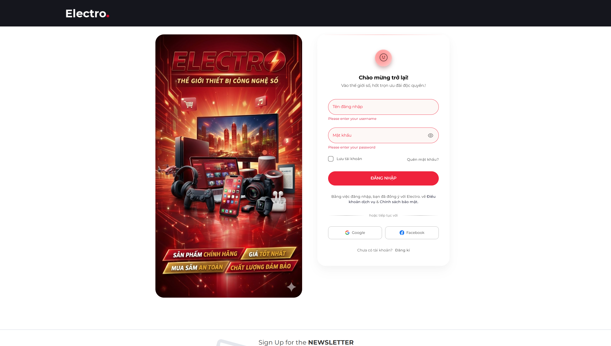
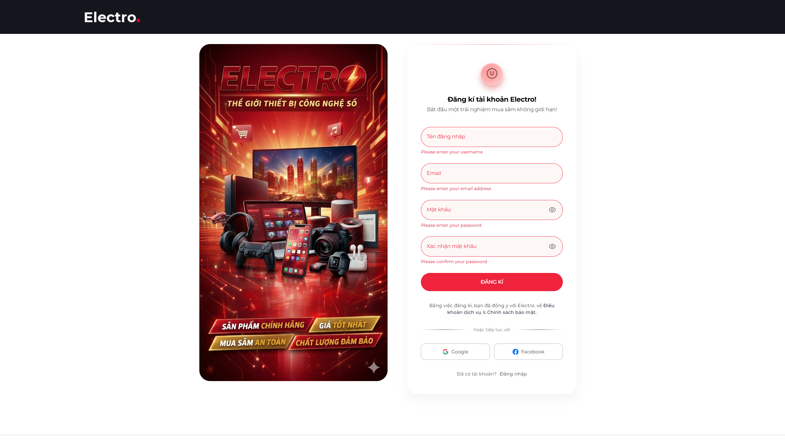
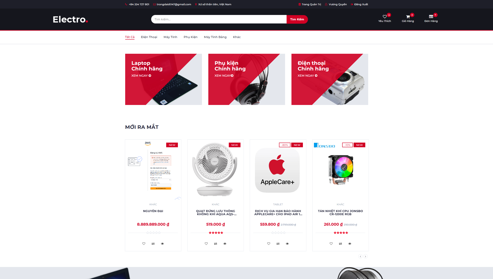
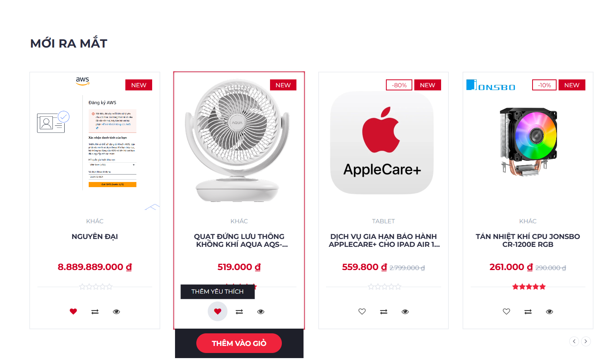
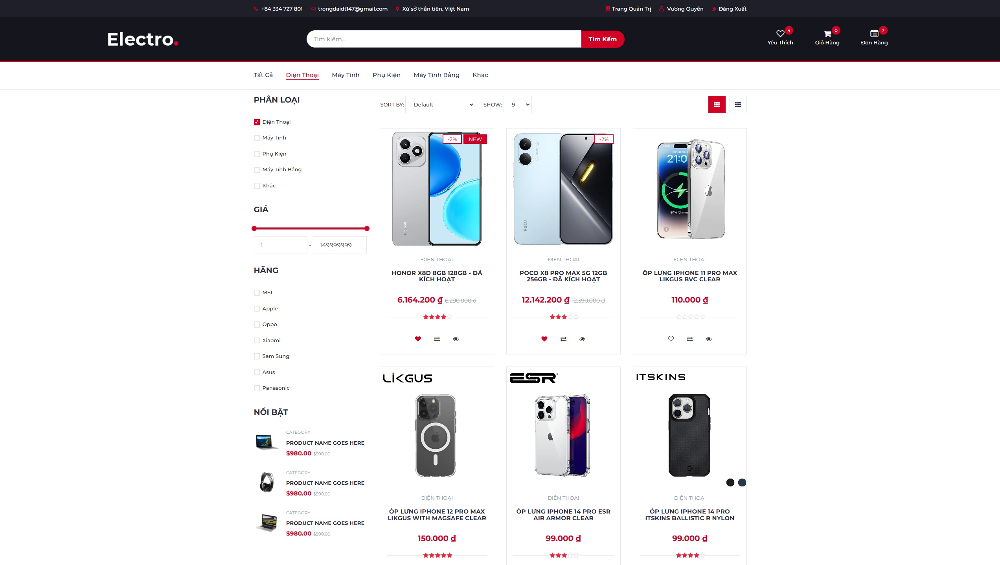
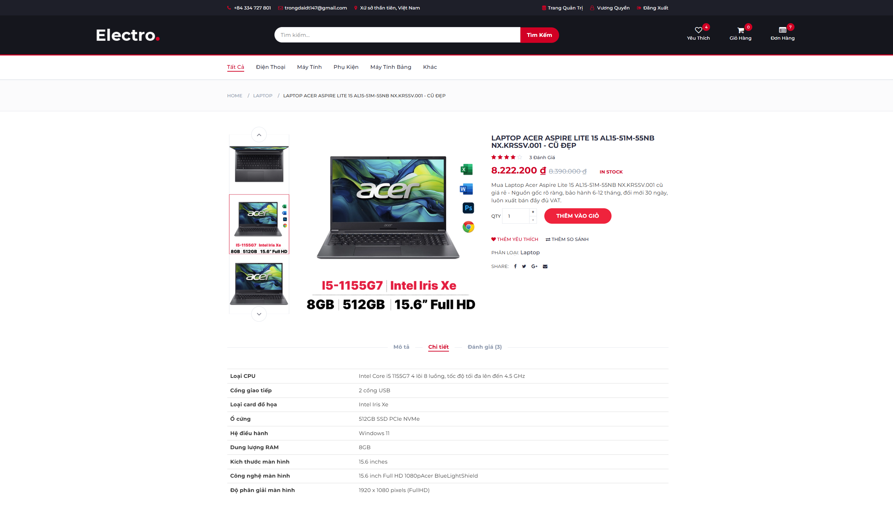
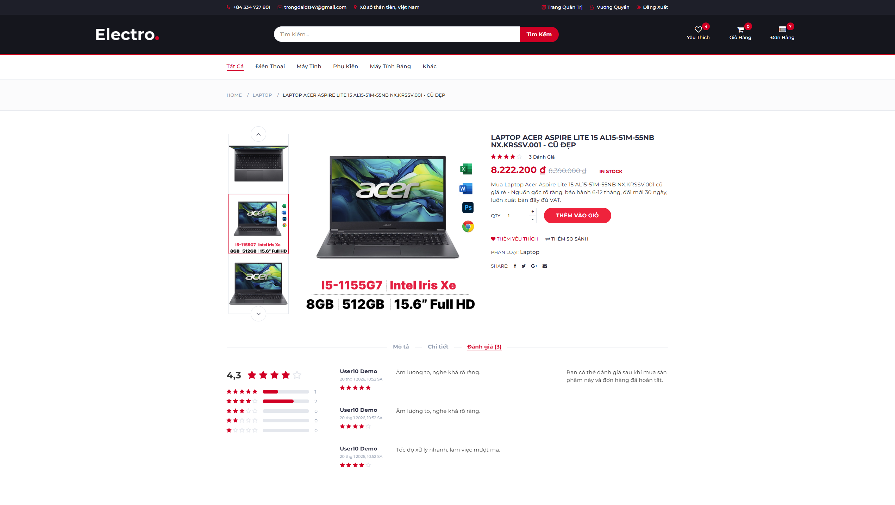
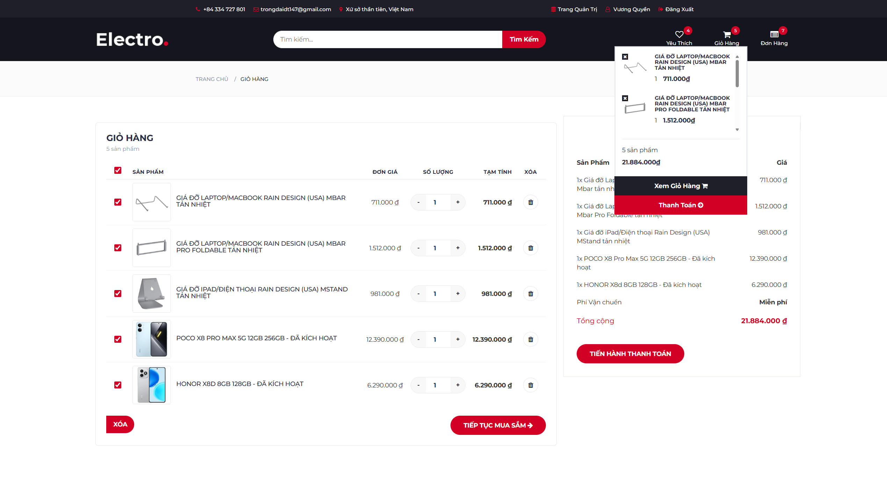
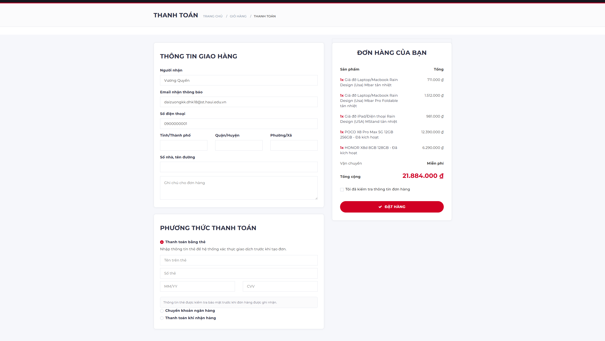
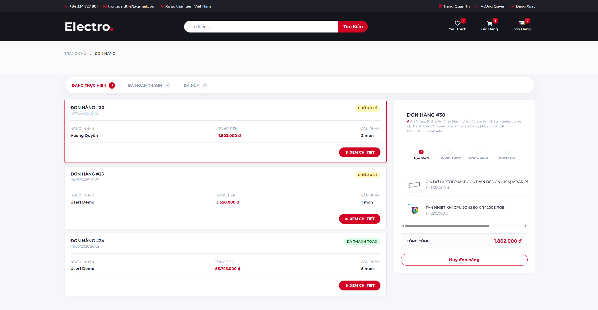
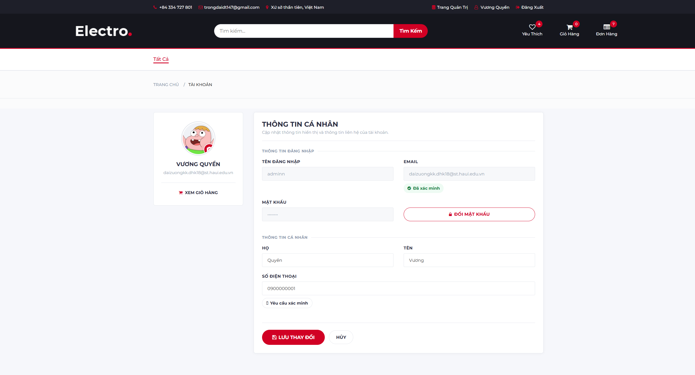
Theo dõi doanh thu, đơn hàng, sản phẩm, khách hàng và cảnh báo tồn kho.
Tìm kiếm, lọc, thêm, sửa, xóa mềm và theo dõi trạng thái bán.
Lọc đơn, xem sản phẩm trong đơn và cập nhật trạng thái xử lý.
Quản lý vai trò, trạng thái, xác thực và thông tin liên hệ người dùng.
Khu vực quản trị là phần vận hành của hệ thống, tiếp nhận dữ liệu từ hoạt động mua hàng để theo dõi doanh thu, xử lý đơn, kiểm soát kho và quản lý người dùng.
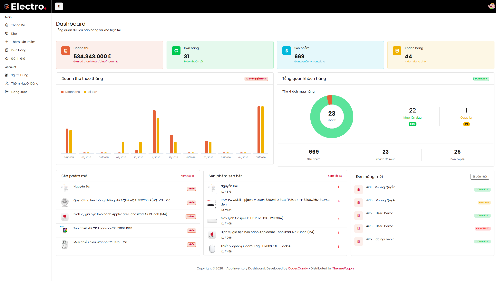
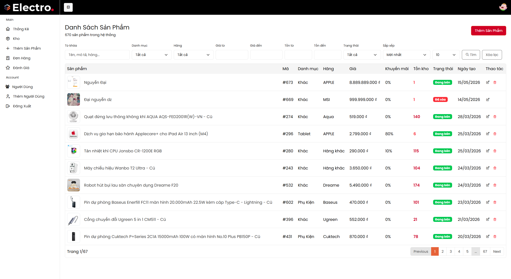
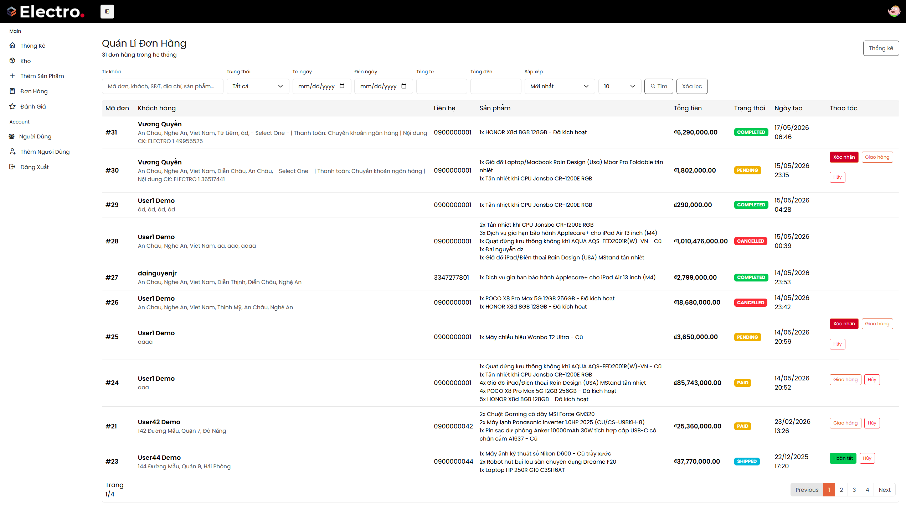
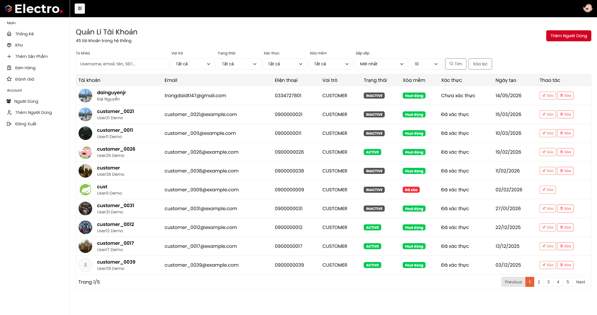
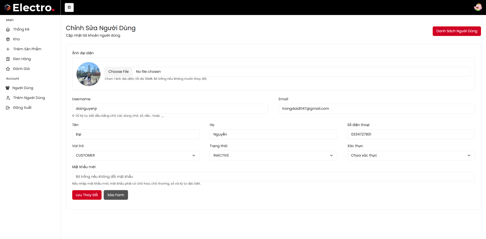
JSP, Bootstrap, CSS/JS tĩnh, component dùng chung cho header, navigation, cart modal và admin layout.
Servlet xử lý route web, API giỏ hàng/yêu thích, checkout, đơn hàng và khu vực admin.
Đóng gói nghiệp vụ như đăng nhập, giỏ hàng, đặt hàng, đánh giá, dashboard và người dùng.
Truy vấn MySQL cho sản phẩm, user, cart, order, review và báo cáo thống kê.
Bảo vệ route cần đăng nhập và giới hạn khu vực admin theo vai trò.
MySQL 8 với dữ liệu seed sản phẩm, người dùng, đơn hàng, đánh giá và tồn kho.
`users`, `addresses`, `verification_otps` lưu tài khoản, địa chỉ giao hàng và mã xác thực OTP.
`products`, `product_images` quản lý tên, mô tả, giá, thương hiệu, danh mục, khuyến mãi, tồn kho và ảnh.
`carts`, `cart_items`, `wishlists` lưu sản phẩm người dùng quan tâm trước khi đặt hàng.
`orders`, `order_items` lưu thông tin người nhận, tổng tiền, phương thức thanh toán, trạng thái và từng dòng sản phẩm.
`reviews` liên kết người dùng và sản phẩm, hỗ trợ số sao, nội dung nhận xét và thời điểm tạo.
Các bảng dùng khóa ngoại để giữ quan hệ giữa user, product, order, cart và review nhất quán.
Luồng dữ liệu chính: `users` sở hữu `carts` và `orders`; `orders` có nhiều `order_items`; mỗi `order_item` liên kết về `products`; sau khi đơn hoàn tất, `reviews` ghi phản hồi của người mua cho sản phẩm.
Thời gian phản hồi nhanh, ổn định khi tìm kiếm, lọc sản phẩm và xử lý các thao tác giỏ hàng.
Kiểm tra session, phân quyền admin/user và bảo vệ dữ liệu đầu vào để giảm rủi ro SQL Injection, XSS.
Giao diện tiếng Việt, thân thiện, rõ trạng thái và tối ưu cho các thao tác mua hàng phổ biến.
Hỗ trợ nhiều người dùng truy cập, đặt hàng và cập nhật dữ liệu trong cùng thời điểm.
MVC và tách lớp controller, service, repository giúp dễ mở rộng tiêu chí lọc hoặc nghiệp vụ mới.
Có khả năng quản lý tập trung thông tin tài khoản, sản phẩm, đơn hàng và báo cáo.
Đăng ký, đăng nhập và từ chối đăng ký khi username/email bị trùng.
Tìm kiếm, lọc sản phẩm và forward đúng view khi người dùng thao tác tại shop.
COD tạo đơn PENDING, thanh toán thẻ tạo đơn PAID và chỉ checkout sản phẩm được chọn.
Khách hủy đơn PENDING, admin hoàn tất đơn và cập nhật trạng thái hợp lệ.
Người mua chỉ được đánh giá sản phẩm sau khi có đơn hoàn tất.
9 integration tests, 9 passed, 0 failed, 0 errors, 0 skipped. Tài liệu cũng mô tả test plan theo giai đoạn.
Các ca kiểm thử tập trung vào rủi ro nghiệp vụ: đăng ký trùng dữ liệu, checkout sai sản phẩm được chọn, cập nhật trạng thái đơn không hợp lệ và đánh giá khi chưa đủ điều kiện.
Người dùng đăng nhập, hệ thống tạo phiên làm việc và xác định quyền truy cập tương ứng.
Khách hàng tìm kiếm, lọc danh mục, xem chi tiết sản phẩm, kiểm tra thông số và đánh giá.
Sản phẩm được thêm vào giỏ, chọn đúng item cần mua, nhập thông tin giao hàng và tạo đơn.
Khách hàng theo dõi trạng thái; hệ thống ghi nhận tiến trình xử lý từ chờ xác nhận đến hoàn tất hoặc hủy.
Quản trị viên theo dõi dashboard, kiểm soát kho, cập nhật trạng thái đơn và quản lý tài khoản.
Từ đăng nhập, tìm kiếm, chi tiết, giỏ hàng, checkout đến theo dõi đơn.
Admin quản lý dashboard, sản phẩm, đơn hàng, người dùng và đánh giá.
Có thể bổ sung cổng thanh toán thật, API vận chuyển, email/SMS, voucher, báo cáo nâng cao và bảo mật chuyên sâu.
Cảm ơn thầy/cô và các bạn đã lắng nghe. Nhóm em xin sẵn sàng nhận câu hỏi và góp ý.